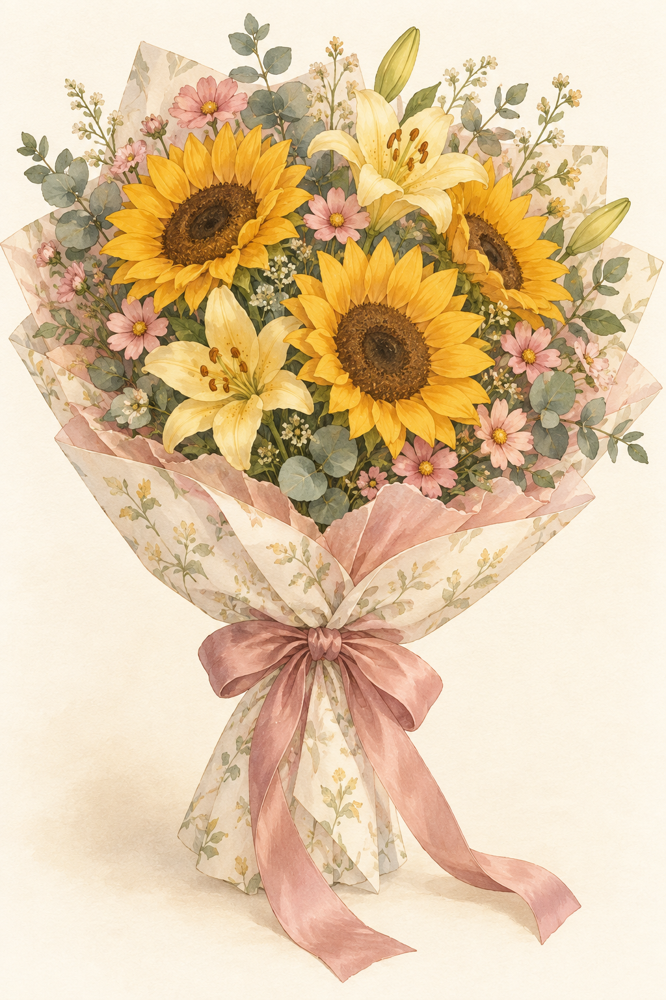

21 DE SEPTIEMBRE · FLORES AMARILLAS
Unas flores.
Un poquito de magia.
Mucho cariño
para ti.
Hoy quería regalarte un pedacito de flores y de todo lo bonito que me haces sentir.
Así que hice este pequeño jardín, especialmente para ti.
Empezar este detalle para tiPorque tú mereces cosas bonitas.

01 / UN JARDÍN QUE ME RECUERDA A TI
Tú haces más bonito
lo que tienes cerquita.
Hay algo en tu manera de ser que me da mucha ternura.
Me nace cuidarte, consentirte y encontrar una razón para hacerte sonreír.
Me encanta esa forma tan tuya de hacerme sonreír.
Toca una flor. Hay un poquito de cariño en cada una.

Elegidas pensando en ti ♡02 / ESTAS FLORES TIENEN DUEÑA
Tu ramito tiene
algo que contarte.
Sé que el 21 no pude darte tus flores, pero quería hacerlo de una forma más bonita: en persona, para ver tu sonrisa al recibirlas.
El 28 de septiembre te las daré yo. Con un abrazo y con todo el cariño con el que elegí cada una.
Este jardín es mi manera de decirte que pensé en ti, y que me hace mucha ilusión tener este detalle contigo.
Tenemos una cita con tus flores03 / DEL JARDÍN A TUS MANOS
Falta poquito para
entregártelas en persona.
Un ramito amarillo. Un abrazo. Y tú.
¡Hoy es el día de darte tus flores! Qué ilusión verte sonreír.
04 / DE MI CORAZÓN, PARA TI
También te escribí
unas cositas.
De esas que a veces se sienten más de lo que se dicen.
Para mi persona bonitaUna cartita con mucho cariñoAbrirCerrar ↗
Mi amorcito,
Gracias por estar en mi vida y por todo el cariño que me das. Me haces feliz con cosas que quizá ni notas: tu sonrisa, tus ocurrencias, la forma en que me escuchas y esa ternura tan tuya.
Admiro muchas cosas de ti. Tu corazón, las ganas que le pones a lo que te importa y esa manera tan bonita de ser tú. Me gusta verte feliz, escucharte hablar de lo que te ilusiona y poder apoyarte en lo que necesitas.
Estás muy bonita, amor. Y no hablo solo de tu sonrisa: también de lo lindo que se siente estar contigo. Me nace tener detalles contigo porque eres muy especial para mí, y porque consentirte también me hace feliz.
El 21 no pude darte tus flores, pero sí pensé en ti con muchísimo cariño. Por eso hice este pequeño jardín: quería regalarte algo que te sacara una sonrisa y te recordara lo mucho que me importas.
El 28 de septiembre quiero entregarte tu ramito en persona. Quiero elegir tus flores, llevarlas con cuidado y dártelas con un abrazo. Me hace mucha ilusión imaginar tu carita al verlas.
Gracias por ser tú y por hacerme sentir tantas cosas bonitas. Este detalle lleva un poquito de todo ese cariño.
Con cariño,
Tu Amorcito